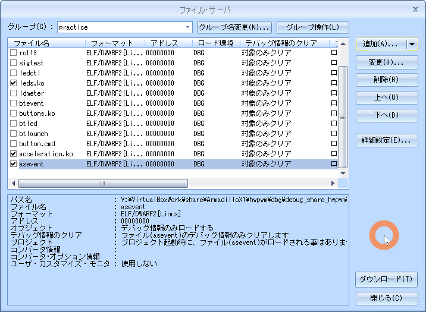
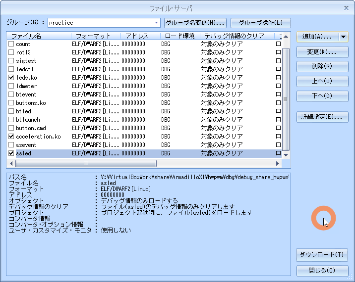

04.sensor
目的
組込みアプリケーション開発 04.sensor
構成データ
/media/sf_ArmadilloX1/hwpwm/work/R06_2024/Apllication_debug/text/practice ディレクトリ
･･･/share/ArmadilloX1/hwpwm/work/R06_2024/Application_debug/text/practice/ の構成
user@1204PC-Z490M:/mnt/v/VirtualBoxWork/share/ArmadilloX1/hwpwm/work/R06_2024/Application_debug/text/practice$ tree -aF -L 3
./
├── 04.sensor/
│ ├── asevent.c* <───── 例題 デバイス制御用ソース
│ ├── asled.c* <───── 課題1 デバイス制御用ソース
│ ├── drivers/
│ │ ├── acceleration/
│ │ │ ├── acceleration.c* <───── ドライバソース
│ │ │ └── Makefile* <───── ドライバ用Makefile
│ │ └── leds/
│ └── Makefile* <───── デバイス制御用Makefile
センサー制御
デバイス仕様

デバイスドライバ
ソース
acceleration.c
04.sensor/drivers/acceleration.c
#include <linux/init.h>
#include <linux/i2c.h>
#include <linux/platform_device.h>
#include <linux/interrupt.h>
#include <linux/input.h>
#include <linux/jiffies.h>
#include <linux/sysfs.h>
#include <linux/workqueue.h>
#include <linux/module.h>
#define I2C_DEVICE_ADDRESS 0x4c
#define MILLI_G_FACTOR 47
#define VALUE_ALERT_BIT 0x40
#define VALUE_SING_BIT 0x20
#define VALUE_COMPLEMENTARY (~0x1f)
#define INTSET_GINT 0x10
#define MODE_ACTIVE 0x01
#define IS_ALERT(value) ((value) & VALUE_ALERT_BIT)
#define IS_MINUS_VALUE(value) ((value) & VALUE_SING_BIT)
enum AccelerationRegister {
REG_X_VALUE,
REG_Y_VALUE,
REG_Z_VALUE,
REG_TILT_STATUS,
REG_SAMPLE_RATE_STATUS,
REG_SLEEP_COUNT,
REG_INTERRUPT_SETTING,
REG_MODE_SETTING,
REG_SAMPLE_RATE,
REG_TAP_DETECTION_THRESHOLD,
REG_TAP_DEBOUNCE_COUNT,
};
static struct i2c_client *acceleration_i2c_client;
// I2C通信 データ受信関数(acceleration_i2c_recv_data)
static int acceleration_i2c_recv_data(enum AccelerationRegister reg_number, unsigned char *recv_buffer)
{
// 加速度センサから1バイトデータを受信するための
// I2Cメッセージ構造体配列を宣言します。
struct i2c_msg msg[] = {
{
.addr = I2C_DEVICE_ADDRESS,
.flags = 0,
.len = 1,
.buf = (unsigned char *)®_number,
},
{
.addr = I2C_DEVICE_ADDRESS,
.flags = I2C_M_RD,
.len = 1,
.buf = recv_buffer,
},
};
// I2Cメッセージを転送します。(i2c_transfer)
return i2c_transfer(acceleration_i2c_client->adapter, msg, 2);
}
// I2C通信 データ送信関数(acceleration_i2c_send_data)
static int acceleration_i2c_send_data(enum AccelerationRegister reg_number, unsigned char send_data)
{
// 加速度センサへ送信するデータを用意します。
unsigned char send_buffer[] = {
reg_number,
send_data,
};
// 加速度センサへ1バイトデータを送信するための
// I2Cメッセージ構造体配列を宣言します。
struct i2c_msg msg[] = {
{
.addr = I2C_DEVICE_ADDRESS,
.flags = 0,
.len = sizeof(send_buffer),
.buf = send_buffer,
}
};
// I2Cメッセージを転送します。(i2c_transfer)
return i2c_transfer(acceleration_i2c_client->adapter, msg, 1);
}
static bool is_acceleration_enable = false;
// 加速度センサ有効化関数(acceleration_enable_setting)
static int acceleration_enable_setting(void)
{
int ret;
// 既に有効になっている場合、何もせず以降の処理を終了します。
if (true == is_acceleration_enable)
return 0;
// ワークキューの処理が完了するまで待機します。(flush_scheduled_work)
flush_scheduled_work();
is_acceleration_enable = true;
// 加速度センサから割込みが発生するように設定します。(acceleration_i2c_send_data)
ret = acceleration_i2c_send_data(REG_INTERRUPT_SETTING, INTSET_GINT);
if (ret < 0)
return ret;
// 加速度センサをアクティブモードに設定します。(acceleration_i2c_send_data)
ret = acceleration_i2c_send_data(REG_MODE_SETTING, MODE_ACTIVE);
if (ret < 0)
return ret;
// 加速度センサの割込みを有効にします。(enable_irq)
// ->割込み番号は、acceleration_i2c_client->irqを指定します。
enable_irq(acceleration_i2c_client->irq);
return 0;
}
// 加速度センサ無効化関数(acceleration_disable_setting)
static int acceleration_disable_setting(void)
{
int ret;
// 既に無効になっている場合、何もせず以降の処理を終了します。
if (false == is_acceleration_enable)
return 0;
is_acceleration_enable = false;
// ワークキューの処理が完了するまで待機します。(flush_scheduled_work)
flush_scheduled_work();
// 加速度センサをスタンバイモードに設定します。(acceleration_i2c_send_data)
ret = acceleration_i2c_send_data(REG_MODE_SETTING, 0);
if (ret < 0)
return ret;
// 加速度センサから割込みが発生しないように設定します。(acceleration_i2c_send_data)
ret = acceleration_i2c_send_data(REG_INTERRUPT_SETTING, 0);
if (ret < 0)
return ret;
return 0;
}
// 加速度センサ有効/無効設定関数(acceleration_store_enable)
static ssize_t acceleration_store_enable(struct device *dev, struct device_attribute *attr, const char *buf, size_t count)
{
int ret;
unsigned long enable;
// 文字列の有効/無効の値を数値に変換します。(kstrtol)
ret = kstrtol(buf, 0, &enable);
if (ret < 0)
return ret;
// 加速度センサの有効/無効を設定します。
// ->"0"以外の数字が書き込まれた場合、有効にします。(acceleration_enable_setting)
// "0"が書き込まれた場合、無効にします。(acceleration_disable_setting)
if (enable)
ret = acceleration_enable_setting();
else
ret = acceleration_disable_setting();
if (ret < 0)
return ret;
return count;
}
unsigned long event_interval_ms = 1000;
// 通知間隔設定関数(acceleration_store_delay)
static ssize_t acceleration_store_delay(struct device *dev, struct device_attribute *attr, const char *buf, size_t count)
{
int ret;
unsigned long interval_ms;
// 文字列の通知間隔を数値に変換します。(kstrtol)
ret = kstrtol(buf, 0, &interval_ms);
if (ret < 0)
return ret;
// 通知間隔をグローバル変数(event_interval_ms)に格納します。
event_interval_ms = interval_ms;
return count;
}
// 加速度値読み取り関数(read_acceleration_value)
static int read_acceleration_value(enum AccelerationRegister reg_number)
{
int buf = 0;
do {
// 第1引数で指定されたレジスタからデータを受信します。(acceleration_i2c_recv_data)
acceleration_i2c_recv_data(reg_number, (unsigned char *)&buf);
// アラートがある場合は再度データを取得します。(IS_ALERT)
} while(IS_ALERT(buf));
// 加速度値が負数の場合は、2の補数として不足しているビットを補完します。
// ->加速度値が負数かどうかの判定は、IS_MINUS_VALUEマクロを使用します。
// 不足しているビットは、VALUE_COMPLEMENTARYで補完します。
if (IS_MINUS_VALUE(buf))
buf |= VALUE_COMPLEMENTARY;
// レジスタから取得した値を、ミリGに変換して返却します。
// ->ミリGへの変換は、MILLI_G_FACTORを乗算します。
return buf * MILLI_G_FACTOR;
}
struct input_dev *input;
// 割込み遅延処理関数(irq_worker)
static void irq_worker(struct work_struct *work)
{
int data_x, data_y, data_z;
// 加速度センサが無効の場合、以降の処理を終了します。
if (false == is_acceleration_enable)
return;
// 加速度センサから、加速度値X,Y,Zをそれぞれ取得します。(read_acceleration_value)
// ->レジスタはそれぞれ、
// REG_X_VALUE, REG_Y_VALUE, REG_Z_VALUE を指定します。
data_x = read_acceleration_value(REG_X_VALUE);
data_y = read_acceleration_value(REG_Y_VALUE);
data_z = read_acceleration_value(REG_Z_VALUE);
// X,Y,Zの値をそれぞれ通知します。(input_report_abs)
input_report_abs(input, ABS_X, data_x);
input_report_abs(input, ABS_Y, data_y);
input_report_abs(input, ABS_Z, data_z);
// 同期イベントを通知します。(input_sync)
input_sync(input);
// 割込みハンドラで無効にした割込みを有効化します。(enable_irq)
// ->割込み番号は、acceleration_i2c_client->irqを指定します。
enable_irq(acceleration_i2c_client->irq);
}
// ワークキュー定義
static DECLARE_DELAYED_WORK(irq_process, irq_worker);
// 割込みハンドラ(irq_handler)
static irqreturn_t irq_handler(int irq, void *dev)
{
// 割込みを一時的に無効化します。(disable_irq_nosync)
// ->割込み遅延処理が完了するまで無効にします。
disable_irq_nosync(irq);
// 加速度センサから値を取得する処理を、
// ワークキューで遅延処理させます。(schedule_delayed_work)
// ->acceleration_store_delay関数で指定されたミリ秒後に実行されるようにします。
// schedule_delayed_workに指定する単位はjiffiesのため、
// ミリ秒からjiffiesに変換します。(msecs_to_jiffies)
schedule_delayed_work(&irq_process,
msecs_to_jiffies(event_interval_ms));
return IRQ_HANDLED;
}
static struct platform_device *pdev;
static DEVICE_ATTR(enable, S_IWUSR, NULL, acceleration_store_enable);
static DEVICE_ATTR(delay, S_IWUSR, NULL, acceleration_store_delay);
// 属性配列
static struct attribute *acceleration_attrs[] = {
&dev_attr_enable.attr,
&dev_attr_delay.attr,
NULL,
};
// 属性グループ構造体
static struct attribute_group acceleration_attr_group = {
.attrs = acceleration_attrs,
};
// i2c_probe関数(acceleration_i2c_probe)
static int acceleration_i2c_probe(struct i2c_client *client, const struct i2c_device_id *id)
{
int ret;
// I2Cクライアントをグローバル変数(acceleration_i2c_client)に保持します。
acceleration_i2c_client = client;
// 入力デバイス構造体を割り当てます。(input_allocate_device)
input = input_allocate_device();
if (!input) {
ret = -ENOMEM;
goto err_ret;
}
// X軸、Y軸、Z軸の最大値、最小値を設定します。(input_set_abs_params)
input_set_abs_params(input, ABS_X, -32, 31, 0, 0);
input_set_abs_params(input, ABS_Y, -32, 31, 0, 0);
input_set_abs_params(input, ABS_Z, -32, 31, 0, 0);
// 入力デバイス構造体を設定します。
input->name = "armadillo-x1-extension-acceleration";
input->phys = "armadillo-x1/input2";
input->id.bustype = BUS_I2C;
input->dev.parent = &pdev->dev;
// ABSイベントを登録します。(set_bit)
// ->この設定によって、デバイスがどのような機能を持つのかを設定します。
set_bit(EV_ABS, input->evbit);
set_bit(ABS_X, input->absbit);
set_bit(ABS_Y, input->absbit);
set_bit(ABS_Z, input->absbit);
// 加速度センサから割込みが発生するように要求します。(request_irq)
// ->割込み番号は、client->irqを指定します。
// 割込みハンドラは、irq_handlerを指定します。
ret = request_irq(client->irq, irq_handler, 0, "armadillo-x1-extension-acceleration", input);
if (ret < 0)
goto err_free_mem;
// 割込みを一時的に無効化します。(disable_irq)
// ->割込み番号は、client->irqを指定します。
disable_irq(client->irq);
// 入力デバイスを登録します。(input_register_device)
ret = input_register_device(input);
if (ret < 0)
goto err_free_irq;
// 属性グループを作成します。(sysfs_create_group)
ret = sysfs_create_group(&client->dev.kobj, &acceleration_attr_group);
if (ret < 0)
goto err_input_unregister_device;
return 0;
err_input_unregister_device:
input_unregister_device(input);
err_free_irq:
free_irq(client->irq, input);
err_free_mem:
input_free_device(input);
err_ret:
return ret;
}
// i2c_remove関数(acceleration_i2c_remove)
static int acceleration_i2c_remove(struct i2c_client *client)
{
// 割込み要求を解除します。(free_irq)
free_irq(client->irq, input);
// 加速度センサを無効にします。(acceleration_disable_setting)
acceleration_disable_setting();
// ワークキューの処理が完了するまで待機します。(flush_scheduled_work)
flush_scheduled_work();
// ワークキューの遅延処理をキャンセルします。(cancel_delayed_work_sync)
cancel_delayed_work_sync(&irq_process);
// 属性グループを削除します。(sysfs_remove_group)
sysfs_remove_group(&client->dev.kobj, &acceleration_attr_group);
// 入力デバイスの登録を解除します。(input_unregister_device)
input_unregister_device(input);
// 入力デバイス構造体のメモリ領域を開放します。(input_free_device)
input_free_device(input);
// グローバル変数(acceleration_i2c_client)を初期化します。
acceleration_i2c_client = NULL;
return 0;
}
// デバイスマッチング構造体配列
static const struct of_device_id acceleration_i2c_of_match[] = {
{ .compatible = "fsl,mma7660" },
{},
};
// デバイスID構造体配列
static const struct i2c_device_id acceleration_i2c_id_table[] = {
{ "mma7660", 0},
{ },
};
// I2Cドライバ構造体
static struct i2c_driver acceleration_i2c_driver = {
.id_table = acceleration_i2c_id_table,
.probe = acceleration_i2c_probe,
.remove = acceleration_i2c_remove,
.driver = {
.name = "acceleration",
.owner = THIS_MODULE,
.of_match_table = of_match_ptr(acceleration_i2c_of_match),
},
};
// probe関数(acceleration_probe)
static int acceleration_probe(struct platform_device *platform_device)
{
pdev = platform_device;
// I2Cドライバを登録します。(i2c_add_driver)
return i2c_add_driver(&acceleration_i2c_driver);
}
// remove関数(acceleration_remove)
static int acceleration_remove(struct platform_device *pdev)
{
// I2Cドライバの登録を解除します。(i2c_del_driver)
i2c_del_driver(&acceleration_i2c_driver);
return 0;
}
// プラットフォームドライバ
static struct platform_driver acceleration_platform_driver = {
.probe = acceleration_probe,
.remove = acceleration_remove,
.driver = {
.name = "armadillo-x1-extension-acceleration",
.owner = THIS_MODULE,
},
};
// 初期化関数(acceleration_init)
static int __init acceleration_init(void)
{
int ret;
// プラットフォームデバイスを登録します。(platform_device_register_simple)
// ->プラットフォーム依存のデバイス情報を登録します。
pdev = platform_device_register_simple("armadillo-x1-extension-acceleration", -1, NULL, 0);
if (IS_ERR(pdev)) {
ret = (int)pdev;
goto err_ret;
}
// プラットフォームドライバを登録します。(platform_driver_register)
// ->登録したプラットフォームデバイスのリソース情報を取得し、
// プラットフォームドライバとして、probe関数とremove関数を登録します。
ret = platform_driver_register(&acceleration_platform_driver);
if (ret < 0)
goto err_platform_device_unregister;
return 0;
err_platform_device_unregister:
platform_device_unregister(pdev);
err_ret:
return ret;
}
// 終了関数(acceleration_exit)
static void __exit acceleration_exit(void)
{
// プラットフォームドライバの登録を解除します。(platform_driver_unregister)
platform_driver_unregister(&acceleration_platform_driver);
// プラットフォームデバイスの登録を解除します。(platform_device_unregister)
platform_device_unregister(pdev);
}
// 初期化の際に、初期化関数が呼ばれるように登録します。
module_init(acceleration_init);
// 終了する際に、終了関数が呼ばれるように登録します。
module_exit(acceleration_exit);
// MODULE_LICENSEは"GPL"とします。
MODULE_LICENSE("GPL");
Makefile
04.sensor/drivers/acceleration/Makefile
KERNELDIR = /home/atmark/linux-4.9-x1-at27_dbg
ARCH = arm
PREFIX = arm-linux-gnueabihf-
MOD_PATH = /work/linux/nfsroot
EXTRA_CFLAGS += -gdwarf-2 -O0
obj-m := acceleration.o
modules:
$(MAKE) -C $(KERNELDIR) M=`pwd` ARCH=$(ARCH) CROSS_COMPILE=$(PREFIX) modules
modules_install:
$(MAKE) -C $(KERNELDIR) M=`pwd` ARCH=$(ARCH) INSTALL_MOD_PATH=$(MOD_PATH) modules_install
myinstall:
cp -p *.ko /media/sf_ArmadilloX1/hwpwm/dbg/debug_share_hwpwm/R06_2024/04_practice
cp -p *.c /media/sf_ArmadilloX1/hwpwm/dbg/debug_share_hwpwm/R06_2024/04_practice
clean:
$(MAKE) -C $(KERNELDIR) M=`pwd` clean
動作確認
make clean
$ make clean
atmark@atde8:/media/sf_ArmadilloX1/hwpwm/work/R06_2024/Application_debug/text/practice-example/04.sensor/drivers/acceleration$ make clean
make -C /home/atmark/linux-4.9-x1-at27_dbg M=`pwd` clean
make[1]: ディレクトリ '/home/atmark/linux-4.9-x1-at27_dbg' に入ります
make[1]: ディレクトリ '/home/atmark/linux-4.9-x1-at27_dbg' から出ます
make modules
「make[2]: 警告: ファイル '/media/sf_ArmadilloX1/hwpwm/work/R06_2024/Application_debug/text/practice-example/02.led/drivers/leds/leds.o' の修正時刻 20 は未来の時刻です」と表示された場合は chrony を ATDE8 と ArmadilloX1 にインストールすると解決する
$ make modules
atmark@atde8:/media/sf_ArmadilloX1/hwpwm/work/R06_2024/Application_debug/text/practice-example/04.sensor/drivers/acceleration$ make modules
make -C /home/atmark/linux-4.9-x1-at27_dbg M=`pwd` ARCH=arm CROSS_COMPILE=arm-linux-gnueabihf- modules
make[1]: ディレクトリ '/home/atmark/linux-4.9-x1-at27_dbg' に入ります
CC [M] /media/sf_ArmadilloX1/hwpwm/work/R06_2024/Application_debug/text/practice-example/04.sensor/drivers/acceleration/acceleration.o
Building modules, stage 2.
MODPOST 1 modules
make[2]: 警告: ファイル '/media/sf_ArmadilloX1/hwpwm/work/R06_2024/Application_debug/text/practice-example/04.sensor/drivers/acceleration/acceleration.mod.c' の修正時刻 0.01 は未来の時刻です
CC /media/sf_ArmadilloX1/hwpwm/work/R06_2024/Application_debug/text/practice-example/04.sensor/drivers/acceleration/acceleration.mod.o
LD [M] /media/sf_ArmadilloX1/hwpwm/work/R06_2024/Application_debug/text/practice-example/04.sensor/drivers/acceleration/acceleration.ko
make[2]: 警告: 時刻のずれを検出. 不完全なビルド結果になるかもしれません.
make[1]: ディレクトリ '/home/atmark/linux-4.9-x1-at27_dbg' から出ます
sudo make modules_install
$ sudo make modules_install
atmark@atde8:/media/sf_ArmadilloX1/hwpwm/work/R06_2024/Application_debug/text/practice-example/04.sensor/drivers/acceleration$ sudo make modules_install
[sudo] atmark のパスワード:
make -C /home/atmark/linux-4.9-x1-at27_dbg M=`pwd` ARCH=arm INSTALL_MOD_PATH=/work/linux/nfsroot modules_install
make[1]: ディレクトリ '/home/atmark/linux-4.9-x1-at27_dbg' に入ります
INSTALL /media/sf_ArmadilloX1/hwpwm/work/R06_2024/Application_debug/text/practice-example/04.sensor/drivers/acceleration/acceleration.ko
DEPMOD 4.9.133-at27
depmod: WARNING: could not open modules.order at /work/linux/nfsroot/lib/modules/4.9.133-at27: No such file or directory
depmod: WARNING: could not open modules.builtin at /work/linux/nfsroot/lib/modules/4.9.133-at27: No such file or directory
make[1]: ディレクトリ '/home/atmark/linux-4.9-x1-at27_dbg' から出ます
sudo make myinstall
$ sudo make myinstall
atmark@atde8:/media/sf_ArmadilloX1/hwpwm/work/R06_2024/Application_debug/text/practice-example/04.sensor/drivers/acceleration$ sudo make myinstall
cp -p *.ko /media/sf_ArmadilloX1/hwpwm/dbg/debug_share_hwpwm/R06_2024/04_practice
cp -p *.c /media/sf_ArmadilloX1/hwpwm/dbg/debug_share_hwpwm/R06_2024/04_practice
cd
root@armadillo:/# cd /lib/modules/4.9.133-at27/extra/
root@armadillo:~# cd /lib/modules/4.9.133-at27/extra/
insmod
#insmod leds.ko, #insmod acceleration ko と #insmod buttons.ko
root@armadillo:/lib/modules/4.9.133-at27/extra# insmod leds.ko
root@armadillo:/lib/modules/4.9.133-at27/extra# insmod acceleration.ko
root@armadillo:/lib/modules/4.9.133-at27/extra# insmod buttons.ko
root@armadillo:/lib/modules/4.9.133-at27/extra# lsmod
Module Size Used by
buttons 3065 0
acceleration 5941 0
leds 2103 0
# tail -f /var/log/kern.log で /dev/input/event* を確認
acceleration.ko -> buttons.ko の順番で insmod すると、acceleration はevent3、buttons は event 4となる
root@armadillo:~# tail -f /var/log/kern.log
root@armadillo:~# tail -f /var/log/kern.log
Feb 14 19:12:08 armadillo kernel: random: systemd: uninitialized urandom read (16 bytes read)
Feb 14 19:12:08 armadillo kernel: random: systemd: uninitialized urandom read (16 bytes read)
Feb 14 19:12:08 armadillo kernel: nf_conntrack: default automatic helper assignment has been turned off for security reasons and CT-based firewall rule not found. Use the iptables CT target to attach helpers instead.
Feb 14 19:12:08 armadillo kernel: random: crng init done
Feb 14 19:12:08 armadillo kernel: random: 6 urandom warning(s) missed due to ratelimiting
Jul 5 07:48:44 armadillo kernel: IPVS: Creating netns size=912 id=1
Jul 5 07:48:45 armadillo kernel: IPv6: ADDRCONF(NETDEV_UP): wlan0: link is not ready
Jul 5 07:48:46 armadillo kernel: IPv6: ADDRCONF(NETDEV_UP): wlan0: link is not ready
Jul 5 09:07:29 armadillo kernel: leds: loading out-of-tree module taints kernel.
Jul 5 09:07:35 armadillo kernel: input: armadillo-x1-extension-acceleration as /devices/platform/armadillo-x1-extension-acceleration/input/input3 <───── 3
Jul 5 09:28:28 armadillo kernel: input: armadillo-x1-extension-btns as /devices/platform/armadillo-x1-extension-btns/input/input4 <────────────────────── 4
デバイスファイル
"/dev/input/event*"
*には連番
ボタンスイッチ、センサなど複数の入力デバイスがある場合、ソースファイル内ではデバイスファイル/dev/input/event* の * を決め打ちしているので注意すること
イベント
読み出したイベントデータは次のinput_event構造体の形で表示
input_event構造体
#include <linux/input.h>
struct input_event {
struct timeval time;
__u16 type;
__u16 code;
__s32 value;
};
| type | code | value |
|---|---|---|
| 3(EV_ABS) | 0(ABS_X) | X軸加速度(mG) |
| 3(EV_ABS) | 1(ABS_Y) | Y軸加速度(mG) |
| 3(EV_ABS) | 2(ABS_Z) | Z軸加速度(mG) |
G は重力加速度の単位()
mG は G の 1000 分の 1
EV_ABSイベント発生間隔設定ファイル
"/sys/devices/soc0/soc/30800000.aips-bus/30a30000.i2c/i2c-1/1-004c/delay"
イベント発生間隔（初期値）: 1000ms
センサの有効化ファイル
"/sys/devices/soc0/soc/30800000.aips-bus/30a30000.i2c/i2c-1/1-004c/enable"
有効化: 0 以外の値を書き込む
無効化: 0
その他
- 一連のイベントの終わりに EV_SYN（同期）
- ボタンイベントと同様に EV_ABS イベントの直後に EV_SYN イベントが発生
例題 asevent
センサイベントの内容を表示する
- X軸加速度が変化したとき --> "X:[X軸valueの値]"
- Y軸加速度が変化したとき --> "Y:[Y軸valueの値]"
- Z軸加速度が変化したとき --> "Z:[Z軸valueの値]"
- 同期イベント発生時 --> "EV_SYN:----------"
センサを有効化、発生間隔は2000ms
ソース
asevent.c
04.sensor/asevent.c
#include <stdio.h>
#include <fcntl.h>
#include <unistd.h>
#include <linux/input.h>
// イベントデバイスファイル
#define AS_EV_FILE "/dev/input/event3"
// 加速度センサ制御用ファイル
#define AS_DELAY_FILE "/sys/devices/soc0/soc/30800000.aips-bus/30a30000.i2c/i2c-1/1-004c/delay"
#define AS_ENABLE_FILE "/sys/devices/soc0/soc/30800000.aips-bus/30a30000.i2c/i2c-1/1-004c/enable"
// 通知時間(ms)
#define DELAY_TIME 2000
// センサの有効設定
#define ENABLE_MODE 1
int main(int argc, char *argv[])
{
int fd_as, fd_as_delay, fd_as_enable;
int ret;
int value;
char data[32];
int n;
struct input_event ev;
// 加速度センサの通知間隔設定属性ファイルをオープンします。
fd_as_delay = open(AS_DELAY_FILE, O_WRONLY);
// オープンに失敗した場合、エラー終了します。
if (fd_as_delay < 0){
perror("failed to open device");
return 1;
}
// 加速度センサ有効化属性ファイルをオープンします。
fd_as_enable = open(AS_ENABLE_FILE, O_WRONLY);
// オープンに失敗した場合、エラー終了します。
if (fd_as_enable < 0){
perror("failed to open device");
return 1;
}
// イベントデバイスファイルをオープンします。
fd_as = open(AS_EV_FILE, O_RDONLY);
// オープンに失敗した場合、エラー終了します。
if (fd_as < 0){
perror("failed to open device");
return 1;
}
// 通知間隔を設定します。
n = sprintf(data,"%d",DELAY_TIME);
ret = write(fd_as_delay, data, n);
// 書き込みが失敗した場合、エラー終了します。
if (ret < 0){
perror("failed to write");
return 1;
}
// 加速度センサを有効にします。
n = sprintf(data,"%d",ENABLE_MODE);
ret = write(fd_as_enable, data, n);
// 書き込みが失敗した場合、エラー終了します。
if (ret < 0){
perror("failed to write");
return 1;
}
// イベント内容を表示する処理。
for(;;){
// 入力イベント構造体を読み込みます。
ret = read(fd_as, &ev, sizeof(ev));
// 読み込みに失敗した場合、エラー終了します。
if (ret < 0){
perror("failed to read events");
return 1;
}
// イベントのタイプで表示内容を変化します。
switch (ev.type){
// タイプがEV_ABSの時の処理。
case EV_ABS:
// コードがABS_XならXの値を表示します。
if (ev.code == ABS_X){
printf("X : %d\n",ev.value);
// コードがABS_YならYの値を表示します。
} else if (ev.code == ABS_Y){
printf("Y : %d\n",ev.value);
// コードがABS_ZならZの値を表示します。
} else if (ev.code == ABS_Z){
printf("Z : %d\n",ev.value);
// コードが上記以外なら、エラー終了します。
} else {
fprintf(stderr, "invalid event code\n");
return 1;
}
break;
// タイプがEV_SYNの時の処理。
case EV_SYN:
printf("EV_SYN: -------------\n");
break;
// タイプが上記以外なら、エラー終了します。
default:
fprintf(stderr, "unknown event\n");
return 2;
}
}
// 加速度センサ制御用ファイルをクローズします。
close(fd_as_delay);
close(fd_as_enable);
// イベントデバイスファイルをクローズします。
close(fd_as);
return 0;
}
Makefile
04.sensor/Makefile
CC = arm-linux-gnueabihf-gcc
#TARGET = asevent asled
TARGET = asevent
CFLAGS = -gdwarf-2 -O0
all: $(TARGET)
install :
cp -p $(TARGET) /work/linux/nfsroot/debug/04_practice
cp -p $(TARGET) /media/sf_ArmadilloX1/hwpwm/dbg/debug_share_hwpwm/R06_2024/04_practice
cp -p $(TARGET).c /media/sf_ArmadilloX1/hwpwm/dbg/debug_share_hwpwm/R06_2024/04_practice
clean:
rm -f $(TARGET)
.PHONY: clean
動作確認
make clean
$ make clean
atmark@atde8:/media/sf_ArmadilloX1/hwpwm/work/R06_2024/Application_debug/text/practice-example/04.sensor$ make clean
rm -f asevent
make
$ make
atmark@atde8:/media/sf_ArmadilloX1/hwpwm/work/R06_2024/Application_debug/text/practice-example/04.sensor$ make
arm-linux-gnueabihf-gcc -gdwarf-2 -O0 asevent.c -o asevent
sudo make install
$ sudo make install
atmark@atde8:/media/sf_ArmadilloX1/hwpwm/work/R06_2024/Application_debug/text/practice-example/04.sensor$ sudo make install
cp -p asevent /work/linux/nfsroot/debug/04_practice
cp -p asevent /media/sf_ArmadilloX1/hwpwm/dbg/debug_share_hwpwm/R06_2024/04_practice
cp -p asevent.c /media/sf_ArmadilloX1/hwpwm/dbg/debug_share_hwpwm/R06_2024/04_practice
CSIDEでロード
メニュー「ファイル」-「ロード」

insmod（既にinsmod 済みなら割愛）
leds.ko も insmod しておくこと
# insmod leds.ko と # insmod acceleration.ko
root@armadillo:/lib/modules/4.9.133-at27/extra# insmod leds.ko
root@armadillo:/lib/modules/4.9.133-at27/extra# insmod acceleration.ko
root@armadillo:/lib/modules/4.9.133-at27/extra# lsmod
Module Size Used by
acceleration 5941 0
leds 2103 0
root@armadillo:/lib/modules/4.9.133-at27/extra#
実行結果
root@armadillo:/debug/04_practice# ./asevent
root@armadillo:/debug/04_practice# ./asevent
X : -940
EV_SYN: -------------
X : -893
Z : 376
EV_SYN: -------------
X : -799
Y : -470
Z : 329
EV_SYN: -------------
X : -611
Y : -846
Z : 235
EV_SYN: -------------
X : -987
Y : 94
Z : 0
EV_SYN: -------------
X : -705
Y : 705
Z : 188
EV_SYN: -------------
X : -141
Y : 423
Z : 893
EV_SYN: -------------
X : 94
Y : 705
Z : 658
EV_SYN: -------------
X : -940
Y : -188
Z : 235
EV_SYN: -------------
^C
実行している様子
asevent を実行している動画
課題1 asled
ソース
asled.c
04.sensor/asled.c
#include <stdio.h>
#include <fcntl.h>
#include <unistd.h>
#include <linux/input.h>
// イベントデバイスファイル
#define AS_EV_FILE "/dev/input/event3"
// 加速度センサ制御用ファイル
#define AS_DELAY_FILE "/sys/devices/soc0/soc/30800000.aips-bus/30a30000.i2c/i2c-1/1-004c/delay"
#define AS_ENABLE_FILE "/sys/devices/soc0/soc/30800000.aips-bus/30a30000.i2c/i2c-1/1-004c/enable"
// LED制御用ファイル
#define LED_FILE "/sys/class/leds/led_ext/brightness"
// 通知時間(ms)
#define DELAY_TIME 100
// センサの有効設定
#define ENABLE_MODE 1
// LED書き込み用定義
#define LED1 0x01
#define LED2 0x02
#define LED3 0x04
#define LED_CENTER 0x18
#define LED6 0x20
#define LED7 0x40
#define LED8 0x80
// Y軸の閾値
#define THRESHOLD1 200
#define THRESHOLD2 400
#define THRESHOLD3 600
int main(void)
{
// 加速度センサの通知間隔設定属性ファイルをオープンします。
// 加速度センサ有効化属性ファイルをオープンします。
// イベントデバイスファイルをオープンします。
// LEDデバイスファイルをオープンします。
// 加速度センサを有効にします。
// LEDを点灯させる処理。
// 加速度センサ制御用ファイルをクローズします。
// LED制御用ファイルをクローズします。
// イベントデバイスファイルをクローズします。
return 0;
}
Makefile
04.sensor/Makefile
CC = arm-linux-gnueabihf-gcc
#TARGET = asevent asled
TARGET = asled
CFLAGS = -gdwarf-2 -O0
all: $(TARGET)
install :
cp -p $(TARGET) /work/linux/nfsroot/debug/04_practice
cp -p $(TARGET) /media/sf_ArmadilloX1/hwpwm/dbg/debug_share_hwpwm/R06_2024/04_practice
cp -p $(TARGET).c /media/sf_ArmadilloX1/hwpwm/dbg/debug_share_hwpwm/R06_2024/04_practice
clean:
rm -f $(TARGET)
.PHONY: clean
動作確認
make clean
$ make clean
atmark@atde8:/media/sf_ArmadilloX1/hwpwm/work/R06_2024/Application_debug/text/practice-example/04.sensor$ make clean
rm -f asled
make
$ make
atmark@atde8:/media/sf_ArmadilloX1/hwpwm/work/R06_2024/Application_debug/text/practice-example/04.sensor$ make
arm-linux-gnueabihf-gcc -gdwarf-2 -O0 asled.c -o asled
sudo make install
$ sudo make install
atmark@atde8:/media/sf_ArmadilloX1/hwpwm/work/R06_2024/Application_debug/text/practice-example/04.sensor$ sudo make install
[sudo] atmark のパスワード:
cp -p asled /work/linux/nfsroot/debug/04_practice
cp -p asled /media/sf_ArmadilloX1/hwpwm/dbg/debug_share_hwpwm/R06_2024/04_practice
cp -p asled.c /media/sf_ArmadilloX1/hwpwm/dbg/debug_share_hwpwm/R06_2024/04_practice
CSIDEでロード
メニュー「ファイル」-「ロード」

insmod（既にinsmod 済みなら割愛）
# insmod leds.ko と # insmod acceleration.ko
root@armadillo:/lib/modules/4.9.133-at27/extra# insmod leds.ko
root@armadillo:/lib/modules/4.9.133-at27/extra# insmod acceleration.ko
root@armadillo:/lib/modules/4.9.133-at27/extra# lsmod
Module Size Used by
acceleration 5941 0
leds 2103 0
実行
root@armadillo:/debug/04_practice# ./asled
root@armadillo:/debug/04_practice# ./asled